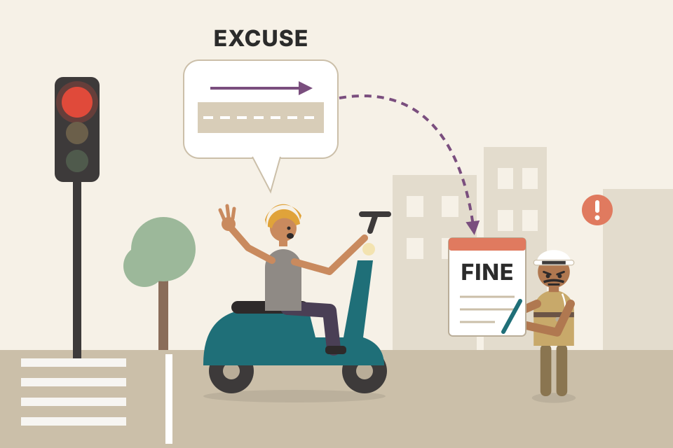
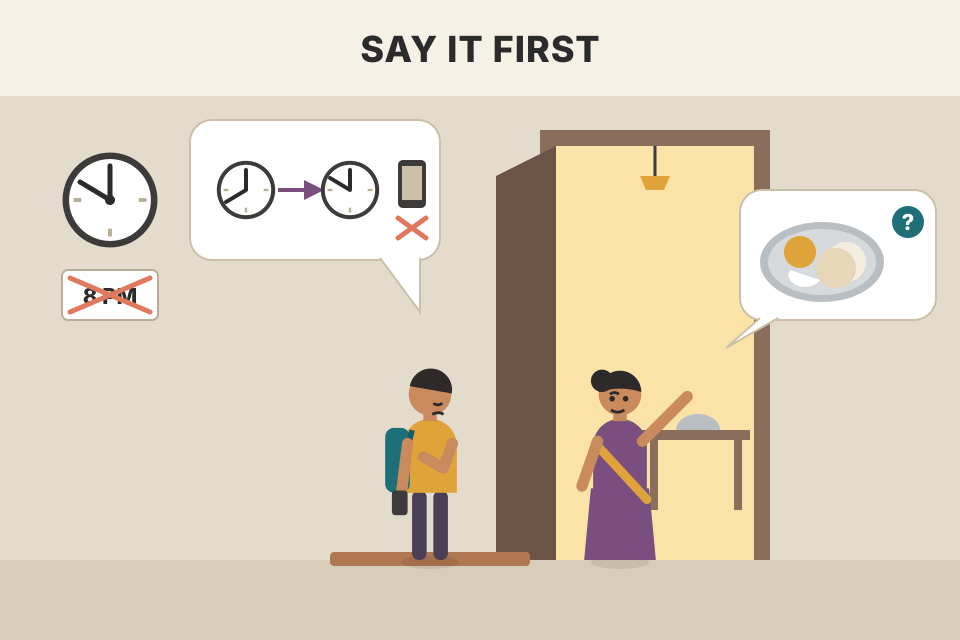
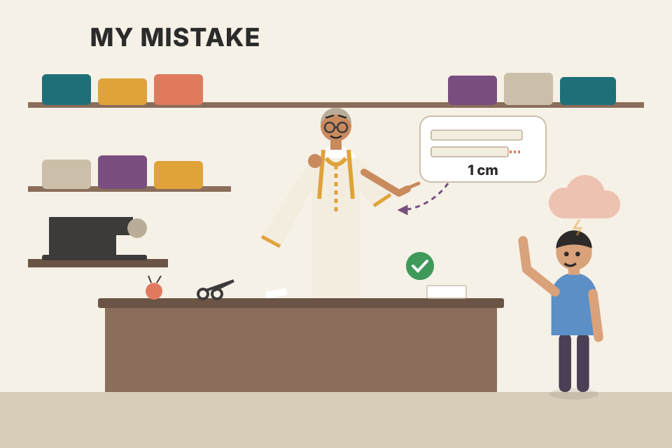
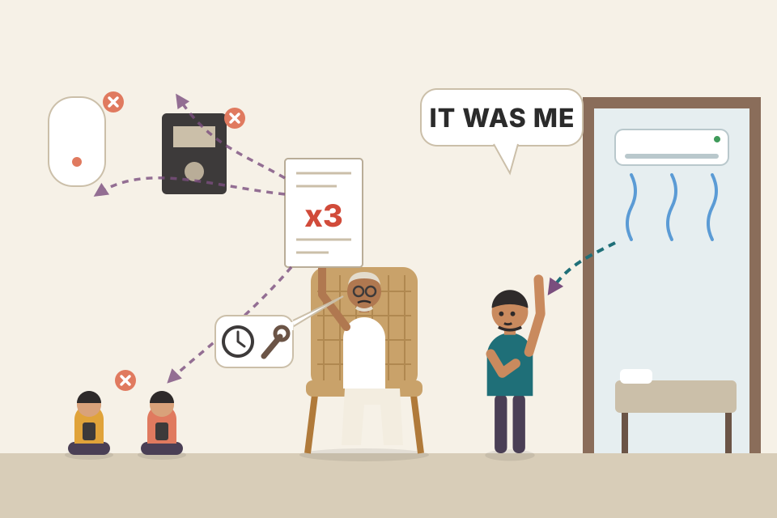
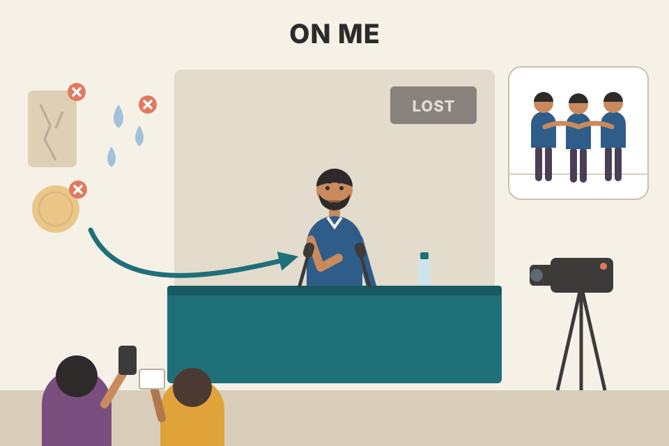
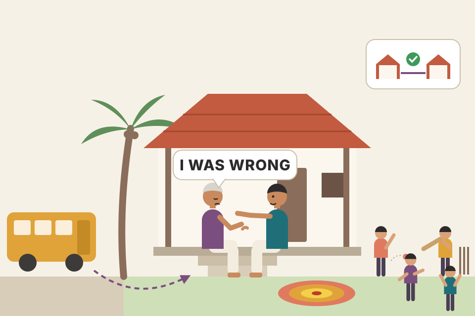
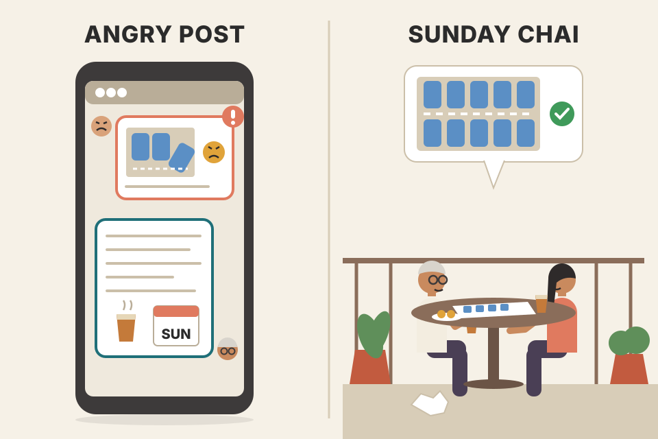
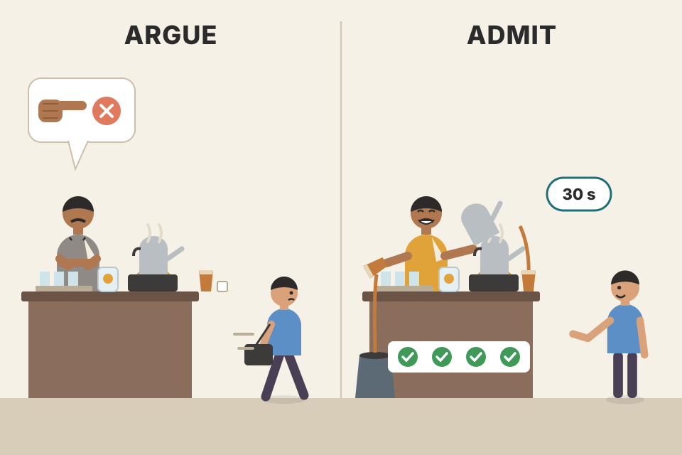

DALE CARNEGIE · HOW TO WIN FRIENDS · PART THREE · CHAPTER 3 · PDF p140–146
If You're Wrong, Admit It
When you know you are in the wrong, say so first, say it fully, and say it before anyone else can. The fight goes out of the other person, and very often they end up defending you.
The last two chapters were about other people's mistakes: you cannot win an argument, and telling someone "you're wrong" only makes an enemy. This short chapter turns the mirror around. What do you do when the mistake is yours? Carnegie's answer is to beat your critic to it: list your own faults, out loud, before they can, and with real energy. He shows it working on a mounted policeman, a fault-finding art editor and an explosive boss, then on a much larger stage (General Lee taking the blame for a lost battle) and in a family torn apart for years. The surprise in every story is the same: the person who came to accuse you ends up going easy on you.
Principle 3 of Part Three
If you are wrong, admit it quickly and emphatically.
How the chapter fits together
pdf p140 · read this first
Where it sits. This is the third of the twelve chapters in Part Three, "How to Win People to Your Way of Thinking". Part Three opened with "You can't win an argument" (the only way to get the best of one is to avoid it) and "Show respect for the other person's opinions. Never say 'You're wrong'". This chapter is the mirror image of the one before it: don't tell others they are wrong, but when you are wrong, say it yourself, and fast. Next comes "Begin in a friendly way". Together these first chapters of Part Three are about taking the heat out of disagreement, so that persuasion becomes possible at all.
The argument as a chain. Each row reacts to the one before it.
Problemyou are clearly in the wrong→a scolding is coming anyway
Instinctdefend · explain · find alibis→the other side attacks harder
Why it flipsthe accuser wants to feel important→if you already condemned yourself, mercy is the only role left
The movesay the bad things about yourself first→"a hundred to one" they go easy on you
ProofRex and the policemanWarren and the art editorHarvey and the boss
Bigger stakesLee after Pickett's chargethe Hong Kong fatherHubbard's letters
Principlewhen right: win gently·when wrong: admit quickly and emphatically
Limitsonly when you really are wrong→sincere, not a tactic (see "Where it can go wrong")
The chapter is short (seven pdf pages) and has no sub-headings. The plates below follow its stories in order.
01 · THE OPENING STORY, PART 1
Rex, Forest Park and a policeman who wanted to be obeyed
pdf p140
Carnegie opens with a small, slightly comic story from his own life. It matters because it has two halves: the first time he met this policeman he handled it the usual way, and the second time he tried the principle of this chapter. Plate 1 is the usual way.
Forest Park, near Carnegie's homeRex, a Boston bulldogno leash, no muzzlea mounted policeman
The setting. A minute's walk from Carnegie's house was a patch of old, untouched woodland called Forest Park: blackberry bushes white with blossom in spring, squirrels raising their young, weeds as tall as a horse's head; Carnegie guesses it looked much as it had when Columbus reached America. He walked there often with Rex, his small, friendly Boston bulldog. Because they almost never met anyone, he let Rex run free, with no leash and no muzzle.
The first meeting. One day they ran into a policeman on horseback who, in Carnegie's telling, was keen to show his authority. He demanded to know why the dog was loose and unmuzzled, and whether Carnegie knew that was against the law.
Carnegie's reply. Quietly, he agreed that he knew the law, but added that he hadn't thought the dog would do any harm out there.
The officer's response. That small "but I didn't think" set him off. What Carnegie thought, he said, made no difference to the law. The dog might kill a squirrel or bite a child. He would let it go this once, but next time Carnegie would be explaining himself to a judge.
What came next. Carnegie meekly promised to obey, and did, a few times. But Rex hated the muzzle, and so did his owner, so they decided to risk it. All went well for a while. Then one afternoon the two of them raced over the top of a hill and found the same officer right in front of them on his bay horse, with Rex running straight at him.
What to notice (our reading). In the first meeting Carnegie admitted the rule but then added a small defence: he had not expected the dog to hurt anyone. It was polite and mild, and it still gave the officer something to push against. A half-admission with a "but" on the end is heard as a defence, and the other person attacks the "but".
Picture it

A traffic constable at a Bengaluru signal waves you over for jumping the light on your scooter. You say, "Yes sir, I know, but there was nobody coming." His face hardens: "Nobody coming? So the signal is only for when you feel like it?" Now he has to prove the rule matters, and the fine is suddenly non-negotiable.
Where it breaks: a real traffic stop has a fixed fine and maybe a camera, so tone cannot always change the outcome. In Carnegie's park the officer had full discretion, which is exactly why his mood decided everything.
What's happening behind it
From the book: Carnegie paints the officer as someone eager to use his authority. Anyone in that mood needs the other person to accept that they are in charge. A reply that even gently argues is a small challenge to that, so he answers by asserting the rule more loudly.
Beyond the book: people who feel their authority is being questioned tend to escalate, because backing down now would look like losing. That is why "yes, but" is such a poor opener: it accepts the facts and challenges the judgement in the same breath.
At work
Your manager asks why a ticket slipped. "Yes, I know it was due Friday, but the spec kept changing" is the Forest Park reply. It may be true, but it is heard as "it wasn't really my fault", and the conversation becomes an argument about the spec. Plate 2 shows what Carnegie did differently the second time.
Carnegie knew he was in trouble. This time he did not wait for the officer to speak.
The move. He spoke first and convicted himself: the officer had caught him in the act, he was guilty, he had no excuses, and the officer had warned him only last week that a second time would mean a fine.
"Officer, you've caught me red-handed."Carnegie's opening words, as he reports them (pdf p141)
The officer's turn-around. His voice went soft. He said he could see how tempting it was to let a little dog run when nobody was about.
Carnegie kept agreeing with the law. Tempting, yes, he replied, but still illegal. The officer said a little dog like that wouldn't hurt anyone. Carnegie pointed out that he might kill squirrels.
The ending. The officer told him he was taking it all too seriously, and suggested he let Rex run over the hill, out of the officer's sight, and they would forget the whole thing.
What had flipped. By the end, each man was arguing the other's original side. The policeman, who a week earlier had threatened him with a judge, was now saying the dog was harmless. Carnegie was the one insisting the law mattered. Carnegie says even Lord Chesterfield (the 18th-century English nobleman famous for his manners) could not have been more gracious than this officer.
Carnegie's explanation. The policeman, like everyone, wanted to feel important. Once Carnegie had already condemned himself, there was nothing left to condemn; the only way the officer could still feel big was to be generous and show mercy. And if Carnegie had defended himself instead? He simply asks whether you have ever tried arguing with a policeman. He had not crossed swords with him; he had agreed that the officer was completely right and he was completely wrong, and he had done it quickly, openly and with enthusiasm.
The general rule he draws.
If you are going to be scolded anyway, it is far better to get there first and do it yourself.
Criticism is much easier to hear from your own mouth than from someone else's.
So say every unflattering thing you know the other person is thinking, or wants to say, or is about to say, and say it before they get the chance.
Carnegie puts the odds at a hundred to one that they will then be generous and forgiving and play your mistake down, just as the officer did with Rex.
Step through the story
Picture it

You come home two hours after you promised, and your mother is waiting at the door. Before she can open her mouth you say: "I know. I said eight, it's ten, I didn't call, and you were worried sick. That was really thoughtless of me." Nine times out of ten her next line is something like "Okay, okay. Have you eaten?"
Where it breaks: a mother wants you safe and home; she was never really looking for a fight. A hostile stranger who wants to punish you, or a rule with no discretion, may take your confession and use it. Carnegie's "hundred to one" is about people with room to be generous.
What's happening behind it
From the book: the accuser's need to feel important is the key. When you resist, they can only feel important by beating you. When you have already admitted everything, beating you is pointless, so the remaining way to feel big is to be the bigger person: to forgive.
Beyond the book: two other forces help. Psychologists describe a reciprocity pull: when someone gives up ground, we feel an urge to give some back. And a fight needs an opponent; once you refuse to be one, the other person's anger has nothing to hit. There is also a fairness instinct: punishing someone who is already punishing themselves feels like kicking someone who is down.
At work
You merged the change that took checkout down for twenty minutes. Don't wait for the incident channel to work out who it was. Post first: "This was my deploy. I skipped the canary because it looked like a one-line config change, and it wasn't. Rolled back at 14:32; I'm writing up the timeline now." Watch how the next replies go: "Thanks for jumping on it", "the canary step should be enforced anyway". People start fixing the process for you instead of cross-examining you.
Interview angle. "Tell me about a time you made a mistake." The Rex lesson: own it in the first sentence, fully, with no "but". Then use most of your time on what you did about it. Interviewers hear the half-admission ("I made a mistake, but the requirements were unclear") as clearly as the officer did.
Worked example: the missed deadline
Defend (week 1)
"Yes, the report is late, but I was pulled into the outage on Tuesday and nobody told me the format changed."
The manager now has to decide whether your excuses are valid, and will probably say they aren't.
Beat them to it (week 2)
"Before you ask: the report is late, and that's on me. I knew Tuesday's outage would eat a day and I didn't flag it. You'll have it by 3 p.m., and next time I'll warn you as soon as a date is at risk."
Nothing left to argue about; the likely reply is "Fine, 3 is okay. That outage was a mess."
Connects to
The mirror image: never tell others they are wrong: Part Three, Ch.2.
Making people feel important, sincerely: Part Two, Ch.6.
03 · AT THE OFFICE
Ferdinand Warren and the art editor who loved finding faults
pdf p142
The second story moves from a park to a business relationship, where the stakes are money and repeat work. It shows the same flip, and adds something new: the person who admits the fault can actually enjoy it.
Ferdinand E. Warrencommercial artista rush joba gloating buyer
The background. Drawings for advertising and publishing have to be exact. Some art editors want their orders done immediately, and rushed work is where small errors slip in. Warren dealt with one art director in particular who seemed to delight in finding some little thing wrong. Warren had often walked out of his office fed up, and he is clear about why: not because he was criticized, but because of the way the man attacked.
The incident. Warren delivered a rush job, and the editor phoned and told him to come over at once: something was wrong. When Warren arrived it was just what he had feared. The editor was hostile, clearly enjoying his chance, and demanded to know why Warren had done such-and-such.
The move. Warren had been studying self-criticism, and decided to try it. He said that if the editor was right, then the fault was entirely his, there was no excuse, he had worked for this editor long enough to know better, and he was ashamed of himself.
The flip. The editor immediately began defending him: yes, true, but it wasn't a serious mistake, it was only… Warren cut in: any mistake can be costly, and every one is irritating. The editor tried to interrupt; Warren would not let him. For the first time in his life he was criticizing himself, and he was having a wonderful time. He said he should have been more careful, that the editor gave him a lot of work and deserved the best, and that he would redo the whole drawing.
The result. The editor protested that he would never put Warren to that much trouble. He praised the work, said he only wanted a small change, that the slip had cost his firm nothing, and that it was a trivial detail not worth worrying about. Then he took Warren to lunch, and before they parted, handed him a cheque and gave him another commission.
The point Carnegie draws: Warren's eagerness to criticize himself took all the fight out of the editor. The man had come ready to attack; Warren left him nothing to attack, so he switched sides and started protecting Warren.
Picture it

A tailor in Chandni Chowk delivers a wedding kurta and the customer spots that one sleeve is a centimetre short. Before the customer can build up steam, the tailor holds it up himself: "Arre, you're right, this is my mistake. For a wedding it must be perfect. Leave it, I'll redo the sleeve tonight." The customer, who came in ready to argue, ends up saying "It's hardly visible, just let it out a little", and comes back for the next order.
Where it breaks: the tailor's offer to redo is real work he must be willing to do. If the customer says "yes, redo it", he has to. Warren's offer was sincere too; it only felt like a trick because the editor refused it.
What's happening behind it
From the book: the same mechanism as the policeman. A fault-finder gets his sense of importance from catching you out. When you catch yourself out first, and more harshly than he would, his role disappears; the generous role is the only one left. Warren also shows that the confession must keep going: when the editor started to soften, Warren did not grab the exit but went on owning it, and that is what fully turned the editor round.
Beyond the book: notice that Warren's admission was conditional and specific ("if what you say is true…"). He did not invent faults; he accepted the one being raised and offered a concrete fix (redo it). An admission paired with a remedy is far more convincing than an apology alone, because it shows you understand the cost.
At work
A senior reviewer leaves a sharp comment on your PR: "This breaks the pagination contract. Did you run the integration tests?" You didn't. The defensive reply explains that the tests are flaky and the contract isn't documented. The Warren reply: "You're right, I didn't, and I should have, since this endpoint has three consumers. Reworking it now and I'll add a contract test so it can't regress." Very often the next comment is "No need to rework everything, just the cursor field. Nice catch adding the test."
Interview angle. "Tell me about a time you received critical feedback." A strong answer shows you agreed with the valid part quickly, did not argue the tone, fixed it, and that the relationship got better afterwards (Warren got lunch and a new job).
Rewrite it
Each message is a reply to someone who has (rightly) caught your mistake. Decide how you would rewrite it, then reveal a Carnegie-style version and what changed.
Connects to
Why Warren didn't argue with the editor's tone: Part Three, Ch.1.
When the roles are reversed and you are the fault-finder, let the other person save face: Part Four, Ch.5.
04 · OWNING IT UPWARD
Bruce Harvey's payroll mistake and the boss who kept blaming others
pdf p143
The bridge. Before the next story Carnegie adds a point of his own: there is a real satisfaction in having the courage to admit you were wrong. It clears the air of guilt and defensiveness, and it often helps fix the very problem the mistake caused. Harvey's story shows both.
Bruce HarveyAlbuquerque, New Mexicofull pay wrongly approvedan employee on sick leave
The mistake. Harvey had wrongly approved full wages for an employee who was on sick leave. When he noticed, he told the employee and explained that, to correct it, the whole overpayment would have to come out of his next paycheck.
The complication. The employee said that would put him in serious financial trouble and asked whether he could pay it back over time. Harvey could only arrange that with his supervisor's approval, and he was sure that asking would set off an explosion.
The decision. Thinking about how to handle it, Harvey realised that the whole mess was his own fault, and that he would have to say so to his boss.
The meeting. He told his boss he had made a mistake and gave him all the facts. The boss exploded and said it was the personnel department's fault. Harvey repeated that it was his. The boss blew up again, this time about carelessness in accounting. Again Harvey said it was his fault. The boss blamed two other people in the office. Every time, Harvey repeated: my fault.
The result. At last the boss looked at him and said, in effect: all right, it's your fault, now go and fix it. The error was put right and nobody got into trouble. Harvey says he felt great, because he had handled a tense situation and had the nerve not to look for excuses. His boss respected him more from then on.
What is unusual here (our reading). The boss was not attacking Harvey at all; he was looking for someone else to blame. Harvey could have let personnel or accounting take the hit. By refusing, he did three things: protected colleagues who would have been blamed unfairly, ended the hunt for a culprit (there was nothing left to investigate), and turned the boss's energy from "who did this?" to "fix it". The fix itself then went smoothly.
Picture it

In a joint family, the electricity bill comes in at triple the usual amount, and grandfather starts blaming everyone in turn: the kids and their phones, the daughter-in-law's new geyser, the meter reader. The eldest son, who forgot to switch off the AC in the empty guest room all month, says each time: "No, Appa, it was me." After the third time grandfather sighs: "Fine. Then you sort out the bill and fix the timer." The house goes quiet, and nobody else gets scolded.
Where it breaks: in a family, the cost of owning up is usually a sigh. In some workplaces the cost can be a bad review or worse. Harvey's courage is real, and it works best where the boss's anger burns out rather than turning into punishment.
What's happening behind it
From the book: admitting the error clears the air of guilt and defensiveness, and helps solve the problem the error caused. Harvey's repetition matters: his boss needed several tries to let go of the urge to blame, and each "it was my fault" removed one more target.
Beyond the book: anger looking for a target behaves like a search. As long as there are suspects, it keeps going. A clear, repeated owner ends the search. Studies of trust repair (for example Kim, Ferrin and colleagues, 2004) found that after an honest mistake of competence, owning it and apologising restored trust better than denying it, which matches Harvey's "more respect for me ever since".
At work
Harvey's story is the "escalate your own mistake" conversation every engineer will have. You migrated the wrong table and finance's numbers are off. Your manager's first instinct may be to blame the data team's schema or QA. Don't take the exit. "That was me. Here is exactly what happened, here's the fix, and here's what I need approved." The manager stops investigating and starts unblocking.
Blameless post-mortems (beyond the book) might seem to clash with this, but they fit together. Blameless means nobody is punished and the review looks for system causes. It works best when individuals freely say "I ran the command", because that is the information the review needs. Harvey's honesty is what makes a blameless culture possible.
Interview angle. "Tell me about a time you had to deliver bad news to your manager." Show that you went early, owned your part without hedging, came with the facts and a proposed fix, and that trust went up afterwards.
Which response?
Pick a response to see how Carnegie would judge it.
Worked example: asking for an exception after your own mistake
Hedge and shift
"There was a mix-up with the sick-leave codes in the payroll system, so one employee got overpaid. Can we approve a repayment plan?"
"Mix-up" and "the system" invite the question "whose mix-up?", and the search for a culprit begins.
Harvey's way
"I made a mistake: I approved full pay for someone on sick leave. Taking it all back next month would really hurt him, so I'd like your OK for him to repay in three instalments. I've added a check so I can't approve leave pay without the code."
Owner named, facts given, a fix and a request ready. The only question left is yes or no.
Connects to
Taking blame yourself on a much bigger stage: the next plate, General Lee.
Robert E. Lee after Pickett's charge: "my fault", with every excuse available
pdf p143–145
The claim first. Carnegie says any fool can try to defend his mistakes, and most fools do. Admitting them lifts you above the crowd and brings a feeling of nobility and even exhilaration. As his example he picks what he calls one of the finest moments history records about General Robert E. Lee: the way Lee blamed himself, and only himself, for the failure of Pickett's charge at the Battle of Gettysburg (July 1863, in the American Civil War).
Gettysburg · July 1863Pickett's division: about 5,000 menfour-fifths fellall brigade commanders but one down
The charge. Carnegie tells it with relish. General George Pickett was a colourful figure: long auburn hair down to his shoulders, and, like Napoleon in Italy, writing passionate love letters almost every day from the front. On that July afternoon his troops cheered as he rode off towards the Union lines with his cap tipped over one ear, and they followed him in tight ranks, flags flying and bayonets flashing. Even the Union soldiers watching murmured in admiration.
The slaughter. The troops moved forward at a steady trot through an orchard and a cornfield, across a meadow and a ravine, while enemy cannon tore holes in their lines. Then Union infantry, hidden behind a stone wall on Cemetery Ridge, stood up and fired volley after volley. Within minutes every one of Pickett's brigade commanders except one had fallen, and so had four out of five of his five thousand men.
The high-water mark. General Lewis Armistead, leading the last push, jumped the stone wall waving his cap on the point of his sword and urged his men on. They went over the wall, fought hand to hand, and planted Southern battle flags on Cemetery Ridge. The flags flew there for only a moment, but Carnegie calls that moment the high-water mark of the Confederacy. The charge was the beginning of the end: Lee could not break into the North, and he knew it. In Carnegie's words, the South was now doomed.
The alibis Lee could have used. Carnegie lists them: some of his division commanders had let him down; the cavalry had not arrived in time to support the infantry; one thing after another had gone wrong.
What Lee did instead. He was so shaken that he offered his resignation to Jefferson Davis, the Confederate president, asking him to appoint a younger and abler man. And as Pickett's broken, bleeding troops struggled back, Lee rode out alone to meet them and took the whole blame on himself.
"All this has been my fault."Lee to the returning troops, as quoted by Carnegie (pdf p145)
Carnegie's verdict. Few generals in all history have had the courage and character to say that.
Beyond the book: reading this story today
Who Lee was. Lee commanded the army of the Confederacy, which fought to preserve slavery. Carnegie's 1936 prose ("far too noble", "brilliant, heroic") reflects a romantic view of the Southern cause that was common in his time and is widely rejected now. The lesson here is only about one act: a commander taking the blame himself instead of passing it down. You can take the lesson without admiring the cause.
The numbers. Carnegie's "five thousand men" matches Pickett's own division. Historians usually count the whole assault (with the divisions of Pettigrew and Trimble) at roughly 12,500 men, of whom more than half were killed, wounded or captured. Armistead was mortally wounded at the wall.
The resignation. Lee's offer to resign came about a month later, in August 1863. Davis refused it, and Lee stayed in command until the war's end in 1865.
A modern equivalent. A CEO whose product launch fails, and who goes in front of the whole company and says "the decision to ship early was mine, not the team's", is doing what Carnegie praises here, without the battlefield.
Picture it

India lose a World Cup semi-final after a top-order collapse. In the press conference the captain could blame the pitch, the dew, the toss, or the two senior batsmen who threw their wickets away. Instead he says: "The batting order was my call, and it didn't work. That's on me, not the boys." The next morning the headlines talk about his leadership, and the dressing room would run through a wall for him.
Where it breaks: a cricket semi-final costs a trophy, not thousands of lives, and Lee's cause was one we should not admire. The picture keeps only the leadership act: taking the blame upward, so it does not fall on the people who followed you.
What's happening behind it
From the book: defending your mistakes is what "most fools" do, so admitting them sets you apart, and Carnegie says it brings its own lift, a sense of nobility. Lee had a stronger case for excuses than almost anyone, which is why the admission stands out.
Beyond the book: when a leader takes the blame, two things happen inside a team. The people below feel protected, so they are more willing to report problems honestly next time. And the leader keeps credibility, because everyone already knew the failure was partly theirs; denying it would have cost more trust than the failure itself. A leader who blames the team teaches the team to hide mistakes from the leader.
At work
As a team lead, the Lee test arrives when your team misses a release or an incident hits customers. In the leadership review, "the junior who wrote it didn't test it" may be true and is the worst thing you can say. "I approved the plan and the timeline; I should have pushed back on skipping the load test" protects the team, keeps the review on the decision rather than a person, and earns you trust both upward and downward. Privately, you can still coach the engineer.
Interview angle. "Tell me about a project that failed" or "a time your team missed a goal." Leadership roles are judged on whether you say "I" for failures and "we" for successes. Tell it the Lee way: the alibis existed, you didn't use them, and here is what you changed.
Worked example: the failed launch update
Pass it down
"The launch slipped because the payments team delivered late and QA found issues at the last minute. We're working to get things back on track."
Every word may be true. The payments team and QA now feel thrown under the bus, and the next escalation will be defensive.
Lee's way
"The launch slipped and that's on me. I set a date before the payments integration was scoped, and I didn't build in time for QA. New date is the 14th, with a buffer this time."
The facts are the same; the blame lands on the person who made the call. The other teams hear that you have their back.
Connects to
Lincoln, on the other side of the same battle, holding back his letter to General Meade: Part One, Ch.1 (plate 8).
A father in Hong Kong: too late to admit it quickly, not too late to admit it fully
pdf p145
The next story is the most personal in the chapter, and the only one where admitting fault means going against a deep social rule.
Michael Cheung, course instructorHong Kongfather and son estranged for yearsgrandchildren never seen
The instructor's point. Michael Cheung, who taught the Carnegie course in Hong Kong, said Chinese culture raises special difficulties for some principles, and that sometimes you have to accept that the benefit of applying a principle outweighs keeping an old tradition.
The man. One middle-aged student had been estranged from his son for many years. The father had been addicted to opium; he was now cured. Under the tradition he lived by, an older person cannot make the first move, so he felt it was the son's job to come to him.
The conflict. Early in the course he told the class about the grandchildren he had never met and how badly he wanted to be reunited with his son. His classmates, all Chinese, understood the pull between that wish and a long-standing tradition. He still believed the young should respect their elders, and that he was right to wait.
The turn. Near the end of the course he spoke to the class again. He had thought hard about it. Carnegie says to admit it quickly and emphatically when you are wrong. It was too late, he said, to admit it quickly, but he could still admit it emphatically.
"I can admit it emphatically. I wronged my son."The father, speaking to his class, as reported by Michael Cheung (pdf p145)
He went on: his son had been right not to want to see him and to shut him out of his life. He might lose face by asking a younger person for forgiveness, but the fault was his and so was the duty to admit it.
The result. The class applauded and backed him fully. At the next session he told them he had gone to his son's house, asked for forgiveness and been given it. He now had a new relationship with his son, his daughter-in-law, and the grandchildren he had at last met.
Two lessons inside the story.
"Quickly" can be missed; "emphatically" cannot. Years of delay did not make the admission useless. The father made up for lateness with completeness: no excuses, and an explicit statement that the son had been right.
A principle can outweigh a custom. Admitting fault cost him face under his tradition. He decided the relationship was worth more than the face, and the class, who shared the tradition, supported him.
Dated framing. The book presents this as a "special problem" of Chinese culture. Elder-first rules exist in many families and cultures, including most Indian ones, and the same tension appears wherever age or rank decides who apologises. Read it as a story about seniority and face, not about one culture.
Picture it

Two brothers in a Kerala family stopped speaking after a fight over the ancestral house. Ten years on, the elder brother, who said the harsher things, knows he was wrong, but in the family it is "the younger one's place" to come and touch his feet. One Onam he takes the bus to his brother's town himself, sits on the verandah and says: "I said things I had no right to say. You were right to stay away." By evening the children of both houses are playing cricket in the yard.
Where it breaks: not every estrangement ends with an open door. If the other person was badly hurt, they may need time or may say no, and the admission is still right even then. The book's story has a happy ending; real ones are not guaranteed.
What's happening behind it
From the book: the father's own reasoning: face is a cost, but the fault was his, so the responsibility to admit it was his too. The class's applause shows that, even within the tradition, people recognised the admission as strength, not weakness.
Beyond the book: many estrangements last because each side is waiting for the other to move first, so both are stuck. Whoever moves first breaks the deadlock, and a full admission makes it easy for the other person to accept, because there is nothing left to defend. Research on apologies also suggests that "you were right to…" (validating the other person's reaction) matters as much as "I'm sorry".
At work
The workplace version is the senior who was wrong to a junior. A tech lead who dismissed a junior's warning in a design review ("that's not how scaling works"), and was later proved wrong, faces the father's choice in miniature: rank says the junior should just move on. Going to them and saying "you were right about the fan-out, and I was dismissive in that meeting" costs a little face and buys enormous trust, and that junior will raise the next warning too.
Interview angle. "Tell me about a time you changed your mind." The strongest version is one where you were the senior, a junior was right, and you said so openly.
Reflect, then reveal
Think of one admission you have been putting off: a teammate you were unfair to, a family member, a friend you let down. Write what you would say to them. Nobody sees this; it is not saved anywhere.
Appealing to the nobler motive (here, the father's own sense of duty): Part Three, Ch.10.
07 · IN WRITING
Elbert Hubbard and the angry letters he turned into invitations
pdf p145–146
Who he was. Elbert Hubbard was an American writer and publisher (he died in 1915) whom Carnegie calls one of the most original authors ever to stir up a nation. His sharp, stinging sentences often made readers furious. But he had a rare talent for handling people, and he often turned enemies into friends.
The situation. An irritated reader would write in to say he disagreed with some article, and finish by calling Hubbard names.
Hubbard's typical reply, retold in our words (the book prints the short letter in full; we do not reproduce it). It made four moves:
Partial agreement. Now that he thought about it, he wasn't fully sure he agreed with the article himself.
Permission to have changed. His views move on; something he published a while ago is not necessarily what he believes now.
Thanks for the criticism. He was glad to hear what the reader thought.
An invitation. If the reader was ever nearby, he should come and visit, and they would settle the question once and for all. He signed off as warmly as he would greet a friend.
Carnegie's comment. He simply asks what anyone could possibly say back to a man who treated them like that.
What is different about this story. Hubbard was not admitting a plain mistake like a loose dog or a wrong paycheck. He was facing an opinion attack, and he admitted the part he could honestly admit: that his own view was not fixed, and that the article might be wrong. He also did not reply to the insults at all. The letter left the angry reader with nothing to fight.
Build Hubbard's reply
An angry user opens a GitHub issue on your open-source library: "Your new API design is idiotic. Whoever approved this has never written real code." Switch on Hubbard's four moves one by one and watch the reply take shape.
Picture it

A neighbour posts in the housing society WhatsApp group that the secretary's new parking plan is "the stupidest rule this building has ever seen". The secretary replies: "Honestly, I'm not sure I've got it right either; the plan I liked last month looks worse to me now. Thanks for saying it straight. Come over for chai on Sunday and let's sort it out properly." The group goes quiet, and on Sunday the neighbour turns up with a better plan.
Where it breaks: the secretary must actually be open to changing the plan. If the reply is just a polite way to shut the neighbour up, the chai meeting will expose it fast.
What's happening behind it
From the book: Carnegie's single question ("what could you say to a man like that?") is the whole explanation. An attack expects resistance. Agreement, thanks and an invitation leave the attacker with nothing to push against, and an open, friendly hand is very hard to slap.
Beyond the book: the point about his views moving on is also a lesson in separating yourself from your past positions. If you treat every view you once held as part of your identity, every criticism of it feels like an attack on you, and you defend it. If you allow that you can change your mind, a critic becomes a possible helper.
At work
The Hubbard situation is everywhere online: a harsh comment on your design doc, a public complaint about your library, a sarcastic tweet about your product. The instinct is to defend the design point by point. Hubbard's reply instead: concede what you honestly can ("you may be right that the builder pattern is overkill here"), allow yourself to have moved on ("I'd design it differently now"), thank them, and invite a proper conversation (a call, an RFC thread). You also skip the insult entirely; answering it only feeds it.
Interview angle. "How do you handle a stakeholder who strongly disagrees with your technical decision?" Show that you look for the part where they are right, say so, and move the argument into a structured conversation.
Connects to
Respecting the other person's opinion even when it comes wrapped in an insult: Part Three, Ch.2.
Win gently when you're right; admit it fast when you're wrong: Principle 3
pdf p146
Carnegie's summing up, in two halves:
When we are right
Try to win people to our way of thinking gently and tactfully (the whole of Part Three is about how).
When we are wrong
Admit it quickly and with enthusiasm. And, he adds, we are wrong surprisingly often, if we are honest with ourselves.
He makes two promises: this approach will produce astonishing results, and, believe it or not, it is a lot more fun in the circumstances than trying to defend yourself (Warren's "grand time" is the evidence). He ends with an old proverb whose gist is that fighting never gets you enough, while giving way gets you more than you expected.
Principle 3
If you are wrong, admit it quickly and emphatically.
The two words, unpacked from the stories. The book does not define them; this split is ours.
Word
What it means
Seen in
The failure mode
Quickly
Before the other person raises it, or as soon as you know. Get there first.
Carnegie speaking before the officer; Harvey going to his boss himself
Waiting to see if anyone notices; letting someone else find it
Emphatically
Fully, plainly, with no "but". Say the worst version yourself, and keep owning it when they start to let you off.
Warren refusing the editor's reassurance; Harvey repeating "my fault"; Lee's "I alone"
The half-admission ("mistakes were made", "yes, but…")
(implied)Then fix it
Pair the admission with a remedy.
Warren offering to redo the drawing; Harvey straightening it out; the father going to his son
An apology with no repair, or self-blame that becomes about your feelings
Picture it

A chaiwala hands you a glass with sugar when you said "no sugar". One kind of chaiwala argues that you never said it. Another laughs, says "Arre, my mistake, sir!", pours it out and makes a fresh one in thirty seconds. You come back to the second one every morning, and you forgive him the next slip too.
Where it breaks: a cup of chai is cheap to redo. When a mistake is expensive (a data leak, a lost client), admitting it is still right, but it will not make the cost disappear. Carnegie's promise is about goodwill, not about erasing consequences.
What's happening behind it
From the book: in every story the admission removed the other person's need to attack, and because they still needed to feel important, the generous role was the one left. That is why "yielding gets you more": you lose the argument you would have lost anyway, and gain the goodwill.
Beyond the book: research on repairing trust (for example Kim, Ferrin and colleagues, 2004) found that after a competence mistake, apologising and owning it repaired trust better than denying it. The same work found the picture is more complicated for integrity failures, where an admission can confirm the worst. So the principle is strongest exactly where Carnegie's stories sit: honest mistakes, not deliberate wrongdoing.
At work
Make it a team habit, not just a personal one. In stand-up, "Yesterday I broke the staging deploy; fixed now, my bad" said casually and quickly sets the tone that mistakes are surfaced early. Leads go first: when you admit your own errors openly, juniors learn it is safe to do the same, and you hear about problems while they are small.
Interview angle. Nearly every behavioural loop asks for a failure or mistake. Use the three-part shape from the table: quickly (I noticed and raised it myself), emphatically (it was my call, no hedging), then fixed (here is what I did and what changed since).
Self-audit: the last time I was wrong, did I…
Connects to
Part Three's full list of principles is collected at the end of Ch.21.
When you have to correct someone else, start by admitting your own mistakes: Part Four, Ch.3.
09 · WRAP-UP
Summary and key terms
pdf p140–146
Beat them to it. If you are going to be criticized anyway, criticize yourself first. Say every unflattering thing the other person is thinking, before they can. Carnegie puts the odds at a hundred to one that they will then be generous and play the mistake down.
Why it works: the accuser wants to feel important. Once you have condemned yourself, mercy is the only way left for them to feel it. Self-criticism is also far easier to hear than criticism from someone else.
Rex and the policeman. A mild "but I didn't think…" earned Carnegie a threat of court; a week later, a full "caught red-handed, no excuses" turned the same officer into the dog's defender, who told him to let Rex run where he couldn't see.
Warren and the art editor. Admitting the error harder than the editor would have, and offering to redo the work, turned a gloating fault-finder into a defender, and ended with lunch, a cheque and a new commission. Warren enjoyed it.
Harvey and the boss. Admitting fault clears the air of guilt and defensiveness and helps fix the problem. Harvey said "my fault" every time his boss blamed someone else; the error was corrected, nobody got in trouble, and his boss respected him more.
Lee after Pickett's charge. With plenty of alibis available, he took all the blame, rode out alone to the survivors and offered to resign. Any fool defends his mistakes; admitting them lifts you above the crowd. (Read today with the context in plate 5.)
The Hong Kong father. Too late to admit it quickly, but not too late to admit it emphatically; he gave up face under his tradition, asked his son's forgiveness and met his grandchildren.
Hubbard's letters. Partial agreement, permission to have changed his mind, thanks and an invitation left angry readers with nothing to fight.
The close: win gently when you are right; admit it quickly and with enthusiasm when you are wrong, which is often. It works better and is more fun than defending yourself. Principle 3: If you are wrong, admit it quickly and emphatically.
Term or phrase
Meaning on this page
Where
Principle 3 (Part Three)
If you are wrong, admit it quickly and emphatically.
pdf p146
Beat them to it
Criticize yourself before the other person can.
pdf p141
Say the derogatory things first
Voice the unflattering things the other person is thinking or about to say.
pdf p141
A hundred to one
Carnegie's odds that a full self-admission draws a generous, forgiving response.
pdf p141
Magnanimous mercy
The only route to feeling important left to an accuser once you have condemned yourself.
pdf p141
Quickly, openly, with enthusiasm
How Carnegie admitted fault to the policeman; the model for the principle.
pdf p141
Clearing the air
Admitting fault removes guilt and defensiveness and often helps solve the problem.
pdf p143
Any fool can defend his mistakes
Defending is the common reflex; admitting sets you apart.
pdf p143
High-water mark
The moment Pickett's men reached Cemetery Ridge, the furthest the Confederacy got.
pdf p144
Quickly vs emphatically
The Hong Kong father: if "quickly" is missed, "emphatically" still works.
pdf p145
Yielding gets you more
The closing proverb: fighting never gets enough; giving way gets more than expected.
pdf p146
10 · USE IT
Practice this week
beyond the book
Small exercises, each with a way to tell whether it worked. The exercises are ours; the ideas behind them are the chapter's.
Spot your "but". For three days, every time you explain a mistake (in chat, a PR reply, at home), notice whether a "but", "although" or "the system" crept in. Worked if: you can name your favourite escape word, and you catch it before you send at least once.
Get there first, once. The next time you make a mistake someone will notice, raise it before they do, in one plain sentence, with the fix. Worked if: the first reply is about the fix or is reassuring ("thanks for flagging"), not a question about what happened.
The Warren sentence. When someone criticizes your work and they are right, say the worse version yourself ("and it could have broken the other two consumers too"). Worked if: they start playing it down for you.
Take one off a colleague. If blame is drifting towards someone else for something that was partly yours, say "that part was mine" in the meeting. Worked if: the colleague notices (a thank-you, or simply trusting you with the next problem).
The overdue one. Send or make the admission you wrote in the plate 6 exercise, even if it is late. Worked if: you did it; how they respond is theirs to decide.
Hubbard reply. Answer one harsh comment (a review, a doc comment, a message) using the four moves, skipping the insult. Worked if: their next message is calmer or more specific.
11 · LIMITS
Where it can go wrong
pdf p140–146 · plus beyond the book
The book's own boundaries first.
It applies when you are actually wrong. The principle opens with "if". The closing paragraph pairs it with the other half: when you are right, win people gently, don't confess to things you didn't do. Hubbard only conceded the part he genuinely doubted.
"Quickly" can be missed. The Hong Kong father shows that a late admission still works if it is complete; delay is a cost, not a reason to skip it.
Admitting is not the end. In every story the mistake still got fixed: Warren offered to redo the drawing, Harvey's boss told him to straighten it out, Lee offered to step down.
Carnegie's own story is not a model of law-abiding behaviour. He knowingly broke the leash rule a second time, and the officer ended up waving the rule away. The story shows the psychology, not that confessing should get you off.
Beyond the book: our critique
It can be used as a tactic. "Say the bad things first so they go easy on you" can slide into performance: pre-emptive self-criticism designed to dodge consequences. People notice when an apology is a technique. The admission must be true, and you must be willing to accept the consequence if it comes (Warren really would have redone the drawing).
Over-apologising backfires. Constant "sorry, my fault" over things that aren't your fault makes you look less competent and devalues the real admissions. It can also quietly shift blame away from a system that needs fixing. Save the full Principle 3 for real mistakes.
Self-blame is not the same as ownership. "I'm useless, I always do this" is about your feelings and puts the other person in the position of comforting you. Ownership is about the error and the fix.
High-stakes and legal settings. In formal disputes, regulated industries, or where liability is in question, an emphatic written admission can have legal consequences. Owning your part to your team is different from signing a statement; get advice where it matters.
Unsafe environments. The "hundred to one" odds assume the other person has room to be generous. In a workplace that punishes every mistake, admitting is still usually right, but expect a cost, and the deeper fix is the culture (blameless reviews, leaders who admit first).
Face and hierarchy. In many Indian and East Asian settings, seniors admitting fault to juniors is rare and powerful, as the Hong Kong story shows. In some places a public admission costs more face than a private one; choose the setting with care, but don't use the setting as a reason never to do it.
Lee as an example. The story's moral (a leader taking the blame) holds; the book's admiring tone about the Confederate cause does not, as plate 5 explains.
The evidence is anecdotes. The stories are chosen because they ended well. Later research on apologies and trust broadly supports the direction, with the important limit that admissions repair trust best after honest mistakes of competence, not after deliberate wrongdoing.
12 · TEST YOURSELF
Check yourself
pdf p140–146
Try to answer before opening each one. The first half is story recall; the second half is using the principle.
1. What did Carnegie say the first time the policeman caught Rex loose, and why did it go badly?
He agreed he knew it was the law but said he hadn't thought the dog would do any harm. The officer attacked that excuse ("the law doesn't care what you think"), listed the risks (a squirrel, a child), and warned that next time it would go to a judge. A half-admission with a "but" is heard as a defence.
2. What did Carnegie do the second time, and how did the officer respond?
He spoke first: caught red-handed, guilty, no excuses, and you warned me you'd fine me. The officer softened, called it a natural temptation, said a little dog was harmless, told Carnegie he was taking it too seriously, and suggested he let Rex run over the hill out of sight and forget it.
3. How does Carnegie explain the officer's change?
The officer, being human, wanted to feel important. Once Carnegie had condemned himself, the only way left to feel important was to be magnanimous and show mercy. Arguing would have given him someone to beat.
4. What is the general rule Carnegie draws from the Rex story, with his odds?
If you will be rebuked anyway, do it yourself first: say every derogatory thing the other person is thinking or about to say, before they can. The chances are a hundred to one they will be generous and minimize your mistake.
5. What did Ferdinand Warren say to the art editor, and how did it end?
That if the editor was right, the fault was entirely his, with no excuse; he had worked for him long enough to know better and was ashamed. When the editor began to defend him, Warren kept owning it (any mistake is costly) and offered to redo the drawing. The editor refused, praised the work, called the error trivial and costless, took Warren to lunch, paid him and gave him another commission.
6. What was Bruce Harvey's mistake, and what did he keep saying to his boss?
He wrongly approved full pay for an employee on sick leave; the employee needed to repay over time, which needed the boss's approval. The boss blamed personnel, then accounting, then two other people; each time Harvey said it was his fault. The boss finally said "okay, your fault, fix it", the error was corrected, nobody got in trouble, and the boss respected him more.
7. What alibis could Lee have used after Pickett's charge, and what did he do instead?
Some division commanders had failed him, the cavalry arrived too late to support the infantry, and much else had gone wrong. Instead he offered his resignation to Jefferson Davis, asking for a younger and abler man, and rode out alone to meet the returning troops, saying it was all his fault and he alone had lost the battle.
8. What did the Hong Kong father mean by "too late to admit it quickly, but I can admit it emphatically"?
Years had passed, so he could not admit fault promptly, but he could still admit it completely: he had wronged his son, the son had been right to shut him out, and although asking a younger person's forgiveness cost him face, the responsibility was his. He did, was forgiven, and met his grandchildren.
9. Describe the moves in Hubbard's reply to an angry reader.
Partial agreement (on reflection he wasn't sure he agreed with the article either), permission to have changed (his views move on, so an old article need not be his view now), thanks for the reader's view, and an invitation to visit and settle it, with a warm sign-off. He ignored the insults. Carnegie: what could you say to a man like that?
10. What two halves does Carnegie's closing paragraph have?
When we are right, win people gently and tactfully; when we are wrong (surprisingly often, if we are honest), admit it quickly and with enthusiasm. It brings astonishing results and is more fun than defending yourself. Proverb: fighting never gets enough; yielding gets more than you expected.
11. Application: your deploy caused an outage and the incident channel is asking "what changed?". What do you post?
Get there first: "That was my deploy. I skipped the canary because it looked like a tiny config change. Rolled back at 14:32; writing the timeline now." Owner, honest reason (not an excuse), fix. No "but", no "the pipeline should have caught it" (raise that later, in the review, as a system improvement).
12. Application: you start admitting a mistake and your manager says "Don't worry, it's not a big deal." What does Warren's story suggest?
Don't grab the exit immediately; acknowledge the cost once more and offer the fix ("thanks, but it did cost the team a day, so I've added a check"). Staying with the admission a moment longer is what fully turned the art editor round. Then accept the grace gracefully; don't over-apologise.
13. Interview: "Tell me about a mistake you made." How does this chapter shape a strong answer?
Quickly: you noticed and raised it yourself. Emphatically: one plain sentence of ownership, no hedging or blaming requirements, QA or teammates. Then fixed: what you did to repair it and what you changed so it would not recur. Spend most of the answer on the repair and the learning, like Harvey's "more respect for me ever since".
14. Application: as a team lead, your team missed a launch and a senior leader asks why. Which story applies, and what do you say?
Lee's. Don't pass it down even if a junior's bug was involved: "I set the date before the integration was scoped and didn't push back on cutting the load test. That's on me. New date with buffer is…" Coach the engineer privately.
15. When should you not use "say the derogatory things first"?
When you aren't actually wrong (don't confess to things you didn't do), when it is a technique to dodge consequences rather than sincere, when constant apologising would devalue it, and with care in legal or high-liability settings. Self-blame ("I'm useless") is also not the principle; ownership of the error and the fix is.
13 · SOURCES
References
pdf p140–146
Book pages and other sources used on this page
Dale Carnegie, How to Win Friends and Influence People, revised edition (1981; Simon & Schuster 2009 printing), Part Three, Chapter 3, "If You're Wrong, Admit It", pdf p140–146. Stories by page: Rex and the mounted policeman p140–141; the "beat them to it" rule p141; Ferdinand E. Warren p142; Bruce Harvey p143; Robert E. Lee and Pickett's charge p143–145; Michael Cheung's Hong Kong student p145; Elbert Hubbard p145–146; closing paragraph, proverb and Principle 3 p146.
Elbert Hubbard's reply letter is printed in the chapter (pdf p146). Retold here as a list of moves, not reproduced.
Beyond the book (named where used): P. Kim, D. Ferrin, C. Cooper, K. Dirks, "Removing the shadow of suspicion: the effects of apology versus denial for repairing competence- versus integrity-based trust violations", Journal of Applied Psychology (2004); work on reciprocity in social influence (e.g. R. Cialdini, Influence); Google, Site Reliability Engineering, chapter on post-mortem culture (blameless reviews).
Historical notes (Beyond the book): the Battle of Gettysburg (1–3 July 1863) and the size and losses of the 3 July assault; Lee's resignation offer to Jefferson Davis (August 1863) and its refusal; Lewis Armistead's death; Elbert Hubbard (1856–1915).